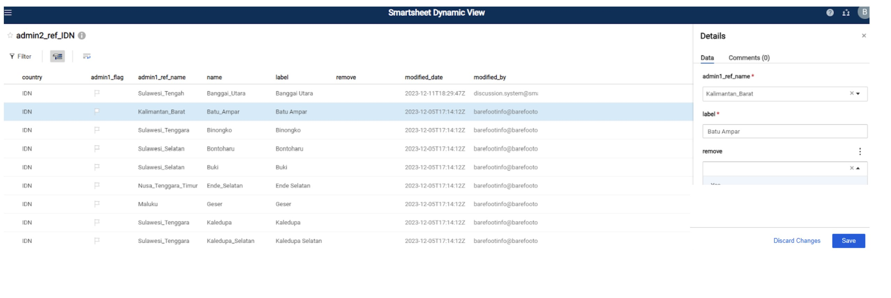

Mga Reperensya nga File
Update Sa Pakisayran Files
Ang tanan nga mga reference file nga updated Sa Smartsheet Dinamikong Panglantaw. Ang mga reference nga mga file nagsilbing mga input alang sa mga lista sa dropdown sa mga porma sa KoboToolbox ug adunay mga datos nga gidugang sa master datasets pinaagi sa mga pag-apil. Naglangkob sila sa komprehensibo nga kasayuran sa lebel sa administratiba sa mga komunidad sa pangisda (nasud, lalawigan, distrito, baryo), mga landing site, yuta sa pangisda, mangingisda, pumapalit, data collector, mga espisye, mga lugar sa pagdumala, mga tipo sa gear, ug mga organisasyon sa pakigtambayayong. Ang mga lakang sa ubos naglatid kon unsaon pag-update sa mga reference nga mga file uban sa bag-ong impormasyon.
Lakang 1: paghimo usa ka libre nga account sa smartsheet.
Ang usa ka libre nga account mahimong ma-access https://www.smartsheet.com/
Pagpili “Sulayi smartsheet alang sa free”
Lakang 2: Paghatag Og Walay Sapin Nga Dagat ang email address nga imong gigamit sa paghimo sa imong smartsheet account.
Ang Dagat nga nagtiniil dayon ipaambit ang mga pakisayran nga mga file nga may kalabutan sa imong organisasyon.
Aron sa pagtan aw sa imong pakisayran files kamo kinahanglan nga mopirma ngadto sa smartsheet Dinamikong Panglantaw sa paggamit sa imong smartsheet credentials: https://dynamicview.smartsheet.com/login
Sa higayon nga logged sa Dinamikong Panglantaw (dili ang smartsheet app), imong makita ang usa ka listahan sa mga pakisayran files mipakigbahin uban sa imong account (Figure 1).
Figure 1: Listahan sa mga pakisayran nga mga file sa Dinamikong Panglantaw

Lakang 3: I-Klik ang usa ka reperensiya file sa paghimo sa updates
Sa higayon nga maablihan, mahimo ka mag-klik sa matag laray aron mahimo ang pag-edit sa adunay na nga datos, o i-klik ang “Bag-ong” button sa taas nga tuo nga suok aron makadugang bag-ong datos (Figure 2).
Ang usa ka panel sa detalye makita sa tuo nga bahin diin imong i-input ang gikinahanglan nga kasayuran (Numero 3; Lamesa 1). Pilia ang” save ” sa ubos nga tuo sa panel sa mga detalye kung nahuman na nimo ang pag-update. Dili nimo kinahanglan nga ipahibalo Nga Nagtiniil Sa Dagat kung maghimo ka mga pagbag-o o pagdugang sa mga ref sheets. Kini awtomatikong iupod sa mga file sa pakisayran sa master ug iupod sa Kobo.
Sa pagbiya sa usa ka comment o sa pagpangutana Sa Nagtiniil team sa bisan unsa nga mga pangutana, pagpili sa “Comments” tab sa mga detalye panel. Ang tanan nga mga indibidwal nga ang pakisayran nga file gipaambit, lakip ang Nagtiniil Nga Ocean team, makadawat pahibalo kung gihimo ang usa ka komentaryo, busa dili kinahanglan nga tag bisan unsang partikular nga indibidwal.
Figure 2: Example view sa admin_ref sa Dinamikong Panglantaw

Figure 3: Example view sa admin_ref detalye panel sa Dinamikong Panglantaw

Lakang 4: Tubaga ang mga hangyo sa pag-update kung ang datos nawala o sayup, o aron pagtubag sa usa ka komento.
Kung adunay dili kompleto o dili husto nga kasayuran nga hinungdanon alang sa pagpopular Sa Mga dropdown sa Kobo o alang sa mga pag-apil, o kung ang usa ka komento gihimo sa sheet, usa ka hangyo sa pag-update ang ipadala sa tanan nga angay nga tiggamit, nga nag-aghat kanila sa pag-update sa kasayuran o pagtubag sa usa ka komento (Figure 4). Pinaagi sa default, ang tanan nga adunay access sa imong mga file sa pakisayran makadawat sa hangyo sa pag-update.
Ang usa ka preview sa datos nga kinahanglan nga ma-update o matubag makita sa ubos sa mensahe sa email, apan dili ka makahimo sa pag-update sa bisan unsang datos nga direkta sa email
- Sa ilawom sa email, adunay usa ka link alang sa “Pag-Adto sa sheet”; bisan pa, ang nagpahiping sheet nagpugong sa pag-access. Palihug ribyuha ang imong datos o tubaga ang komento pinaagi sa Bukas nga hangyo.
I-klik ang “Open Hangyo” button sa email nga mensahe.
Ang usa ka bag-ong bintana sa browser sa internet magbukas sa usa ka porma nga sama sa pag-setup alang sa matag entry (Figure 5)
Ribyuha ANG BFO kaumahan ug pun-on ang mga editable kaumahan.
I-klik sunod sa ubos sa screen sa paglihok pinaagi sa matag entry nga kinahanglan nga updated.
Aron laktawan ang usa ka entry (pananglitan kung dili ka sigurado kung unsang tubag ang pilion) i-klik ang “Next” nga wala maghimo usa ka pagpili sa mga ma-edit nga kolum. Ang sunod nga entry nga kinahanglan ma-update magpakita.
Kung kinahanglan nimo nga mogawas sa panid o mohunong sa wala pa ma-update ang tanan nga mga entry, ang imong mga kapilian kinahanglan maluwas sa sunod nga imong ablihan usab ang hangyo. Sa pag-abli sa pagpadayon sa, lang i-klik “Next” hangtud nga imong makita ang usa ka entry nga kinahanglan nga updated.
Sa diha nga ikaw sa pagkuha sa mga katapusan nga entry, i-klik “Gibuhat”. Ang usa ka pop-up nga mensahe makita nga nangutana kung Andam ka ba nga isumite ang imong pag-update?’:
Pag-klik sa” Balik ” kung kinahanglan nimo nga repasuhon
I-klik ang “Submit Update” sa pagsumiter sa inyong mga updates.
Ang imong mga pag update awtomatiko nga nadugang sa file sa pakisayran ug mahimo nimo kini makita sa Dinamikong Panan aw
Kung sa bisan unsang oras nga makasugat ka bisan unsang mga sayup, adunay mga pangutana, o kinahanglan nga suporta alang sa pag-update sa mga pakisayran nga file, palihug kontaka kami sa katie@barefootocean.org o brittany@barefootocean.org.
Figure 4: Panig-Ingnan “Update Hangyo” email sa diha nga impormasyon kinahanglan nga matul-id o comment kinahanglan nga mitubag sa.

Table 1: ang nag-unang mga natad sa matag usa sa mga pakisayran nga mga file. Ang tipo sa uma nga “BFO” gidumala sa Nagtiniil Nga Dagat ug dili ma-edit. Sa paghangyo sa mga kausaban sa bisan unsa sa mga” BFO ” kaumahan, palihug mobiya sa usa ka comment. Ang mga uma nga adunay tipo sa uma nga “editable” mahimong ma-edit. Ang tipo sa uma nga “awto” awtomatiko nga gipuy-an.
| Ngalan sa uma | Paghulagway sa uma | Matang sa uma |
|---|---|---|
| Ang tanan nga reference files | ||
| latest_comment | Kini nga kolum nagtipig sa katapusang komento nga gihimo alang sa kana nga laray. Aron matan-aw ang tibuuk nga diskusyon sa mga komento alang sa kana nga laray, pag-klik lang bisan diin sa laray. Ang mga detalye sa panel makita, sama sa gihimo sa Figure 3. Pag-klik sa tab nga “Mga Komento” aron makita ang tanan nga mga komento alang sa kana nga laray. | auto |
| modified_date | Petsa sa katapusan nga pag edit | auto |
| modified_by | Ang mga tiggamit nga naghimo sa katapusan nga pag-edit | auto |
| active | Pilia ang” Oo ” kung ang datos nakolekta didto. Kung wala na nimo gikolekta ang datos didto, ug gusto nga itago kini gikan sa Kobo dropdown, pilia ang “Dili.” | edited |
| remove | Pilia ang” Oo ” kung gusto nimo tangtangon ang administrasyon 1. Ang mga admin 1 kinahanglan nga tangtangon lamang kung ang ngalan sayup o kini usa ka duplicate sa usa ka naglungtad nga rekord. Palihug leave sa usa ka comment mahitungod sa hinungdan sa pagtangtang. Kung ang datos dili na nakolekta didto, pilia ang” Dili “gikan sa” aktibo ” nga kolum. | edited |
| admin1_ref | ||
| country | Ang code sa nasud sa iso usa ka giila nga code sa kombinasyon sa sulat | BFO |
| name | Ngalan sa administrasyon 1, ang labing kataas nga lebel sa administratiba pagkahuman sa nasud (ie lalawigan) nga wala ‘y lugar ug wala’ y punctuation, gihatagan ra og gibug-aton | BFO |
| label | Ngalan sa administrasyon 1, ang labing kataas nga lebel sa administratibo pagkahuman sa nasud (ie lalawigan) nga adunay gitugotan nga mga wanang ug punctuation. Palihug ayaw usba ang label gawas kung kinahanglan gyud, tungod kay gipasukad niini ang mga pag-apil. | edited |
| partner_flag | Ang bandila mahimong pula kung ang kantidad sa” partner ” wala maglungtad sa org_ref | BFO |
| partner | Ngalan sa kauban nga wala ‘y mga wanang ug wala’ y punctuation, gihatagan ra og gibug-aton. Ang lista sa dropdown konektado sa kolum nga “ngalan” sa org_ref. | edited |
| admin2_ref | ||
| country | Ang code sa nasud sa iso usa ka giila nga code sa kombinasyon sa sulat | BFO |
| name | Ngalan sa administrasyon 2, ang labing kataas nga lebel sa administratibo pagkahuman sa administratibo (ie distrito) nga wala ‘y wanang ug wala’ y punctuation, gihatagan ra og gibug-aton | BFO |
| label | Ngalan sa administrasyon 2, ang labing kataas nga lebel sa administratibo pagkahuman sa administratibo (ie distrito) nga adunay gitugotan nga mga wanang ug punctuation. Palihug ayaw usba ang label gawas kung kinahanglan gyud, tungod kay gipasukad niini ang mga pag-apil. | edited |
| admin1_flag | Ang bandila mahimong pula kung ang kantidad nga” admin1_ref_name ” wala maglungtad sa admin1_ref | BFO |
| admin1_ref_name | Ang ngalan sa admin 1 nga walay luna ug walay punctuation, mga underscore lamang. Ang lista sa dropdown konektado sa kolum nga “ngalan” sa admin1_ref. | edited |
| admin3_ref | ||
| country | Ang code sa nasud sa iso usa ka giila nga code sa kombinasyon sa sulat | BFO |
| name | Ang mga ngalan sa admin 2 ug admin 3 gihiusa nga wala ‘y mga wanang ug wala’ y punctuation, gihatagan ra og gibug-aton.Ang admin3 mao ang labing kataas nga lebel sa administratibo pagkahuman sa admin 2 (ie baryo). | BFO |
| label | Ngalan sa admin3, ang labing kataas nga lebel sa administratibo pagkahuman sa admin 2 (ie baryo) nga adunay mga wanang ug gitugotan nga punctuation. Palihug ayaw usba ang label gawas kung kinahanglan gyud, tungod kay gipasukad niini ang mga pag-apil. | edited |
| admin1 | Admin 1 ngalan uban sa luna ug punctuation gitugotan. Kini gikuha gikan sa administr1_ref ug auto nga gipuy-an base sa gipili sa administr2 nga gipili. | BFO |
| admin1_ref_name | Ang ngalan sa admin 1 nga walay luna ug walay punctuation, mga underscore lamang. Kini gikuha gikan sa admin1_ref ug auto nga gipuy an base sa gipili sa administr2 | BFO |
| admin2_flag | Ang bandila mahimong pula kung ang kantidad nga” admin2 ” wala maglungtad sa administr2_ref. | BFO |
| admin2 | Admin 2 ngalan uban sa luna ug punctuation gitugotan. Ang lista sa dropdown konektado sa kolum nga “label” sa administr2_ref. | edited |
| admin2_ref_name | Ngalan sa admin 2 walay luna ug walay punctuation, lamang underscores. Gikuha kini gikan sa admin2_ref ug auto nga gipuy-an base sa gipili sa administr2 nga gipili. | BFO |
| admin3_lat | Latitude sa admin 3 | edited |
| admin3_long | Longitude sa admin 3 | edited |
| m1-m4_flag | Susihon ang bandila kung ang pagdumala_id_1-4 wala maglungtad sa pagdumala_ref. | BFO |
| management_ID_1-4 | Ngalan SA pagdumala ID, nga adunay mga luna ug ang punctuation gitugotan. Kung adunay 4 nga mga lugar sa pagdumala sa sulud sa administr3, pilia ra ang una nga yunit sa pagdumala sa “management_ID_1”, ang ikaduha nga yunit sa pagdumala sa “management_ID_2”, ug uban pa. Ang lista sa dropdown konektado sa kolum nga “pagdumala_id” sa management_ref. | edited |
| management_govern_1-4 | Oo/Dili field nga nagpaila kon ang baryo mao ang responsable alang sa area management. | edited |
| landings_mon | edited | |
| landings_prof | edited | |
| comm_prof | edited | |
| hhs | edited | |
| buyer_ref | ||
| country | Ang code sa nasud sa iso usa ka giila nga code sa kombinasyon sa sulat | BFO |
| name | Ngalan sa pumapalit nga walay luna ug walay punctuation, lamang underscore | BFO |
| label | Ang ngalan sa pumapalit nga adunay mga luna ug gitugot nga punctuation. Palihug ayaw usba ang label gawas kung kinahanglan gyud, tungod kay gipasukad niini ang mga pag-apil. | edited |
| buyer_gender | Ang Gender sa pumapalit; ‘male’ (lalaki), ‘female’ (babaye), ‘nonbinary’ o ‘business_nogender’ | edited |
| buyer_id | Talagsaon NGA NUMERO SA ID aron mahibal-an ang pumapalit. Palihug mobiya sa usa ka comment kon ang duha ka lain-laing mga pumapalit adunay sama nga ID. Pinaagi sa default, duha ka mga pumapalit nga adunay parehas nga eksaktong ngalan, bisan kung gikan sila sa duha ka lainlaing mga baryo, makadawat sa PAREHAS nga ID gawas kung gisultihan. | BFO |
| admin1 | Admin 1 ngalan diin ang pumapalit gipalit gikan sa, uban sa luna ug punctuation gitugotan. Kini gikuha gikan sa admin1_ref ug auto nga gipuy-an base sa gipili nga administr3_ref_name. | BFO |
| admin2 | Admin 2 ngalan diin ang pumapalit gipalit gikan sa, uban sa luna ug punctuation gitugotan. Gikuha kini gikan sa admin2_ref ug auto nga gipuy-an pinahiuyon sa gipili nga ngalan sa administr3_ref_name. | BFO |
| admin3 | Admin 3 ngalan diin ang pumapalit gipalit gikan sa, uban sa luna ug punctuation gitugotan. Gikuha kini gikan sa admin3_ref ug auto nga gipuy-an pinahiuyon sa gipili nga ngalan sa administr3_ref_name. | BFO |
| admin3_ref_name | Ang mga ngalan sa admin 2 ug admin 3 gihiusa nga wala ‘y mga wanang ug wala’ y punctuation, gihatagan ra og gibug-aton.Ang lista sa dropdown konektado sa kolum nga “ngalan” sa admin3_ref. | edited |
| admin3_flag | Ang bandila mahimong pula kung ang kantidad nga” admin3_ref_name ” wala sa admin3_ref. | BFO |
| fisher_ref | ||
| country | Ang code sa nasud sa iso usa ka giila nga code sa kombinasyon sa sulat | BFO |
| name | Ang ngalan sa mangingisda nga walay luna ug walay punctuation, lamang underscore | BFO |
| label | Ang ngalan sa mangingisda nga adunay mga luna ug gitugot nga punctuation. Palihug ayaw usba ang label gawas kung kinahanglan gyud, tungod kay gipasukad niini ang mga pag-apil. | edited |
| fisher_gender | Ang Gender sa mangingisda; ‘male’ (lalaki), ‘female’ (babaye), ‘nonbinary’ o ‘business_nogender’ | edited |
| fisher_id | Talagsaon NGA NUMERO SA ID aron mahibal-an ang mangingisda. Palihug leave sa usa ka comment kon ang duha ka lain-laing mga mangingisda adunay SAMA nga ID. Pinaagi sa default, duha ka mga mangingisda uban sa sama nga eksakto nga ngalan, bisan kon sila gikan sa duha ka lain-laing mga balangay, makadawat sa SAMA NGA ID gawas kon kon dili gisultihan. | BFO |
| admin1 | Admin 1 ngalan diin ang mga mangingisda yuta sa ilang mga dakpon, uban sa mga luna ug punctuation gitugotan. Kini gikuha gikan sa admin1_ref ug auto nga gipuy-an base sa gipili nga administr3_ref_name. | BFO |
| admin2 | Ngalan sa admin 2 diin ang mangingisda yuta sa ilang mga dakpon, uban sa luna ug punctuation gitugotan. Gikuha kini gikan sa admin2_ref ug auto nga gipuy-an pinahiuyon sa gipili nga ngalan sa administr3_ref_name. | BFO |
| admin3 | Admin 3 ngalan diin ang mga mangingisda yuta sa ilang mga dakpon, uban sa mga luna ug punctuation gitugotan. Gikuha kini gikan sa admin3_ref ug auto nga gipuy-an pinahiuyon sa gipili nga ngalan sa administr3_ref_name. | BFO |
| admin3_ref_name | Ang mga ngalan sa admin 2 ug admin 3 gihiusa nga wala ‘y mga wanang ug wala’ y punctuation, gihatagan ra og gibug-aton.Ang lista sa dropdown konektado sa kolum nga “ngalan” sa admin3_ref. | edited |
| admin3_flag | Ang bandila mahimong pula kung ang kantidad nga” admin3_ref_name ” wala sa admin3_ref. | BFO |
| data_collector_ref | ||
| country | Ang code sa nasud sa iso usa ka giila nga code sa kombinasyon sa sulat | BFO |
| name | Ngalan sa tigkolekta sa datos nga walay luna ug walay punctuation, lamang underscores | BFO |
| label | Ngalan sa tigkolekta sa datos nga adunay mga luna ug gitugot nga punctuation. | edited |
| gender | Ang Gender sa data collector; ‘male’ (lalaki), ‘female’ (babaye), ‘nonbinary’ o ‘business_nogender’ | edited |
| admin3_flag | Ang bandila mahimong pula kung ang kantidad nga” admin3_ref_name ” wala sa admin3_ref. | BFO |
| admin3_ref_name | Ang mga ngalan sa admin 2 ug admin 3 gihiusa nga wala ‘y mga wanang ug wala’ y punctuation, gihatagan ra og gibug-aton.Ang lista sa dropdown konektado sa kolum nga “ngalan” sa admin3_ref. | edited |
| landings_mon | Pilia ang” Oo ” kon gusto nimo nga ang data collector makita sa dropdown alang sa kobo landings monitoring form. | edited |
| landings_prof | Pilia Ang “Oo” kung gusto nimo makita ang kolektor sa datos sa dropdown alang sa porma sa pag-profile Sa Kobo | edited |
| hhs | Pilia Ang “Oo” kung gusto nimo makita ang kolektor sa datos sa dropdown alang sa porma Sa survey Sa Kobo household | edited |
| comm_prof | Pilia Ang “Oo” kung gusto nimo makita ang data collector sa dropdown para sa kobo community profiling form | edited |
| fishing_ground_ref | ||
| country | Ang code sa nasud sa iso usa ka giila nga code sa kombinasyon sa sulat | BFO |
| name | Ngalan sa pangisda wala ‘y lugar ug wala’ y punctuation, gipasiugda ra | BFO |
| label | Ang ngalan sa yuta sa pangisda nga adunay mga luna ug gitugotan ang punctuation. Palihug ayaw usba ang label gawas kung kinahanglan gyud, tungod kay gipasukad niini ang mga pag-apil. | edited |
| admin3_flag | Ang bandila mahimong pula kung ang kantidad nga” admin3_ref_name ” wala sa admin3_ref. | BFO |
| admin3_ref_name | Ang mga ngalan sa admin 2 ug admin 3 gihiusa nga wala ‘y mga wanang ug wala’ y punctuation, gihatagan ra og gibug-aton.Ang lista sa dropdown konektado sa kolum nga “ngalan” sa admin3_ref. | edited |
| partner_flag | Ang bandila mahimong pula kung ang kantidad sa” partner ” wala maglungtad sa org_ref | BFO |
| partner | Ngalan sa kauban nga wala ‘y mga wanang ug wala’ y punctuation, gihatagan ra og gibug-aton. Ang lista sa dropdown konektado sa kolum nga “ngalan” sa org_ref. | edited |
| latitude | Latitude sa pangisdaan | edited |
| longitude | Ang gitas-on sa salog sa pangisda | edited |
| gear_ref | ||
| country | Ang code sa nasud sa iso usa ka giila nga code sa kombinasyon sa sulat | BFO |
| name | Lokal nga ngalan sa gear nga walay luna ug walay punctuation, lamang underscores | BFO |
| label | Ang lokal nga ngalan sa gear nga adunay mga luna ug gitugot nga punctuation. Palihug ayaw usba ang label gawas kung kinahanglan gyud, tungod kay gipasukad niini ang mga pag-apil. | edited |
| gear_global | Iningles nga ngalan sa gear nga walay luna ug walay punctuation, lamang underscores. Kini usa ka predefined dropdown list. Palihug pagpili usa nga labing angay sa lokal nga gamit, o komento kung dili ka sigurado. | edited |
| gear_detail | Deskripsyon sa gear | edited |
| species_group | Mga espisye mga target sa gear. Kung ang usa ka gear nag-target sa daghang mga espisye, paghimo usa ka bag-ong laray sa datos alang sa matag grupo sa species. Ang lista sa dropdown konektado sa kolum nga “species_group” sa species_ref. | edited |
| species_flag | Ang bandila mahimong pula kung ang gipili nga” species_group ” wala maglungtad sa specie_ref. | BFO |
| partner | Ngalan sa kauban nga wala ‘y mga wanang ug wala’ y punctuation, gihatagan ra og gibug-aton. Ang lista sa dropdown konektado sa kolum nga “ngalan” sa org_ref. | edited |
| partner_flag | Ang bandila mahimong pula kung ang kantidad sa” partner ” wala maglungtad sa org_ref | BFO |
| landing_site_ref | ||
| country | Ang code sa nasud sa iso usa ka giila nga code sa kombinasyon sa sulat | BFO |
| name | Ngalan sa landing site nga walay luna ug walay punctuation, lamang underscores | BFO |
| label | Ang ngalan sa landing site nga adunay mga luna ug ang punctuation gitugotan | edited |
| admin3_flag | Ang bandila mahimong pula kung ang kantidad nga” admin3_ref_name ” wala sa admin3_ref. | BFO |
| admin3_ref_name | Ang mga ngalan sa admin 2 ug admin 3 gihiusa nga wala ‘y mga wanang ug wala’ y punctuation, gihatagan ra og gibug-aton.Ang lista sa dropdown konektado sa kolum nga “ngalan” sa admin3_ref. | edited |
| management_ref | ||
| country | Ang code sa nasud sa iso usa ka giila nga code sa kombinasyon sa sulat | BFO |
| partner_ID | Ngalan sa kauban nga wala ‘y mga wanang ug wala’ y punctuation, gihatagan ra og gibug-aton. Ang lista sa dropdown konektado sa kolum nga “ngalan” sa org_ref. | edited |
| partner_flag | Ang bandila mahimong pula kung ang kantidad sa” partner ” wala maglungtad sa org_ref | BFO |
| management_id | Talagsaon nga ngalan sa lugar sa pagdumala nga adunay mga wanang ug gitugotan nga punctuation. Palihug ayaw usba ang ngalan gawas kung kinahanglan gyud, tungod kay gipasukad niini ang mga pag-apil. | edited |
| management_id_unique | Talagsaon nga ngalan sa lugar sa pagdumala ug petsa sa pagsira. Kini kinahanglan nga ang pagdumala_id nga walay mga luna o punctuation inubanan sa usa ka gidaghanon nga nagpaila sa talagsaon nga pagsira sa maong dapit. Pananglitan, kung ang Usa ka management_id nga gitawag Boston adunay duha ka mga petsa sa pagsira nga kauban niini, kami adunay duha nga gitudlo sa pagdumala_id_unique fields. Ang usa mahimong Boston_1 ug lain Nga Boston_2 aron mahibal-an ang mga pagsira sa sulud sa usa ka lugar sa pagdumala. | BFO |
| management_fishing_ground | Ang lista sa mga hinungdan sa pagpangisda nga may kalabutan sa petsa sa pagdumala ug pagsira. | edited |
| management_method | Ang matang sa pamaagi sa pagdumala, lakip ang temporaryo nga pagsira, wala ’ y mga zone sa pagkuha, ug uban pa. Kini mao ang usa ka predefined listahan. Palihug komentaryo kung dili ka sigurado. | edited |
| regulation_type | edited | |
| target_group | edited | |
| target_species | Target nga mga espisye alang sa gidumala nga lugar. Kini mahimong mga espisye o mga espisye. Umahan bukas. | edited |
| species_flag | BFO | |
| target_habitat | Target nga puy-anan alang sa gidumala nga lugar | edited |
| management_area_ha | Gidak-on sa gidumala nga dapit gisukod sa hectares (ha) | edited |
| close_date | Pagsira sa gidumala nga lugar | edited |
| open_date | Petsa sa pag-abli sa gidumala nga lugar | edited |
| management_lat | Latitude sa management area | edited |
| management_long | Ang longitude sa management area | edited |
| org_ref | ||
| country | Ang code sa nasud sa iso usa ka giila nga code sa kombinasyon sa sulat | BFO |
| name | Ngalan sa kasosyo/organisasyon nga walay luna ug walay punctuation, lamang underscore | BFO |
| label | Ngalan sa partner/organisasyon nga adunay mga luna ug gitugot nga punctuation. Palihug ayaw usba ang label gawas kung kinahanglan gyud, tungod kay gipasukad niini ang mga pag-apil. | edited |
| species_group | Ang mga grupo sa mga species nga gikolekta sa kauban ang datos. Ang lista sa dropdown konektado sa kolum nga “species_group” sa species_ref. Pilia ang tanan nga mga grupo kung gusto nila ang tanan nga mga species sa species _ref aron magpakita. | edited |
| species_ref | ||
| country | Ang code sa nasud sa iso usa ka giila nga code sa kombinasyon sa sulat | BFO |
| partner | Ang ngalan sa Partner nga walay luna o punctuation, nagpasiugda lamang. Ang mga dropdown sa Species gisala sa kauban. Ang pila ka mga nasud adunay daghang mga kauban nga nagbahin sa usa ka lista sa mga species. Sa kana nga kaso, makita nimo ang code sa nasud imbis nga kasosyo, ug ang tibuuk nga lista sa species ipakita alang sa matag kauban sa kana nga nasud, gawas kung ang pipila ka mga grupo sa species gipiho sa kolum nga “species_group” sa org_ref. | BFO |
| habitat | Tipo sa puy-anan nga may kalabutan sa mga espisye | BFO |
| name | Ang lokal nga ngalan ug mga espisye nga ngalan gihiusa sa usa ka underscore, nga walay laing punctuation o luna. | BFO |
| label | Mga ngalan sa species sa parentesis | BFO |
| species_group | Ang mga espisye giklasipikar ngadto sa mga grupo base sa ilang biology nga walay luna o punctuation, nagpasiugda lamang. Kini nga natad gigamit aron makatabang sa pagsala sa pipila ka mga kapilian sa tubag sa Kobo. | BFO |
| species_flag | Ang bandila mahimong pula kung ang gipili nga” species_group “wala’ y pakisayran sa gear_ref. Kana nagpasabut nga ang tanan nga mga gear nga gilista sa gear_ref makita alang sa kini nga grupo sa mga species. Aron lang ipakita ang mga gear nga nagpunting sa kini nga grupo sa species, palihug idugang ang grupo sa species sa gear_ref. | BFO |
| local_name | Lokal nga mga espisye ngalan uban sa luna ug punctuation gitugotan | edited |
| admin2 | Ngalan sa administrasyon 2 walay luna o punctuation, lamang underscore. Ang lista sa dropdown konektado sa kolum nga “ngalan” sa administr2_ref. Kini nga uma lamang ipakita alang sa mga kauban nga gusto sa mga espisye dropdown sinala sa admin 2 pinili. | edited |
| common_english | Kasagaran nga mga espisye sa ingles nga ngalan nga adunay mga luna ug ang punctuation gitugotan | BFO |
| scientific_family | Ngalan sa pamilya sa usa ka espisye nga adunay mga luna ug punctuation nga gitugotan | BFO |
| scientific_species | Ang siyentipikong ngalan sa mga espisye nga adunay mga luna ug gitugot nga punctuation. Kung ang mga espisye wala mahibal - an, ang genus o pamilya mahimo usab nga makasulod. Kung ang genus ra ang nahibal-an, i-type ang ngalan sa henero nga gisundan sa “sp” (sukwahi sa “spp” o spp.”). Kung ang pamilya ra ang nahibal-an, i-type ang ngalan sa pamilya (ie Lutjanidae). | edited |
| translations_ref | ||
| english | Ang paghubad sa ingles alang sa” pagdugang bag-ong”,” wala mahibal-an”,” dili ibaligya”, ug uban pa. | BFO |
| country language | Paghubad sa pinulongan sa nasud alang sa “pagdugang bag-ong”, “wala mahibal-an”, “dili ibaligya”, ug uban pa. | edited |
| ref_sheet | Ang pakisayran sheet ang paghubad nga gihiusa sa sa pagpakita sa mga angay nga dropdown sa Kobo | BFO |
| min_max_ref | ||
| country | Ang code sa nasud sa iso usa ka giila nga code sa kombinasyon sa sulat | BFO |
| partner | Ang ngalan sa Partner nga walay luna o punctuation, nagpasiugda lamang. | BFO |
| min | Minimum nga presyo base sa specie_group | edited |
| max | Maximum nga presyo base sa specie_group | edited |
| species_group | Mga espisye ang min / max nga pasidaan magamit. Aron makadugang usa ka bag-ong grupo, palihug komentaryo ug ipahibalo SA BFO. | BFO |
| category | Presyo kada kg o presyo kada indibidwal (species gibug-aton ug gitas-on sa mga pasidaan nga gipatuman sa likod katapusan pinaagi sa data gikan sa literatura) | edited |
Kanunay Nga Gipangutana Nga Mga Pangutana:
- Unsa ka dugay ang pag-download sa usa ka bag-ong admin 1, unsa ka dugay kini moabut sa wala pa kini makita sa dropdown alang sa admin 2?
- Gikinahanglan ang 15 minuto sa wala pa magamit ang mga bag-ong entry sa mga dinamikong dropdown. Nalakip kini sa administr2 dropdown sa admin3_ref, ang species_group dropdown sa gear_ref, ang administr3 dropdown sa buyer_ref, fisher_ref, data_collector, ug uban pa. Tan-awa Ang Figure 5 alang sa bug-os nga lista sa mga dinamikong dropdown ug ang ilang agianan sa trabaho pinaagi sa mga file sa pakisayran.
- Sa higayon nga ako makadugang o update sa usa ka pakisayran file, unsa ka dugay kini kuhaon sa atubangan sa mga updates makita diha sa Kobo survey?
- Kinahanglan nimo nga makita ang usa ka gi-update nga kobo form sa gibana-bana nga 12-24 ka oras.
- Giunsa ang pagrekord sa mga ngalan sa mga pumapalit, mangingisda ug mga tigkolekta sa datos?
- Sa minithi, mga ngalan kinahanglan nga ingon sa talagsaon nga kutob sa mahimo ngadto sa mga indibidwal ug naglakip sa ilang unang ngalan, katapusan nga ngalan ug angga. Kung ang usa ka tawo dili gusto nga ipaambit ang ilang tibuuk nga ngalan mahimo usab nimo gamiton ang una o una nga letra sa ilang katapusan nga ngalan.
Dinamikong dropdown nga koneksyon tali sa mga file sa pakisayran.